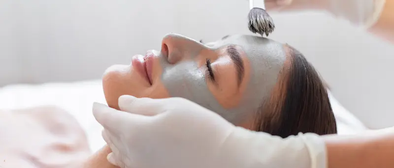
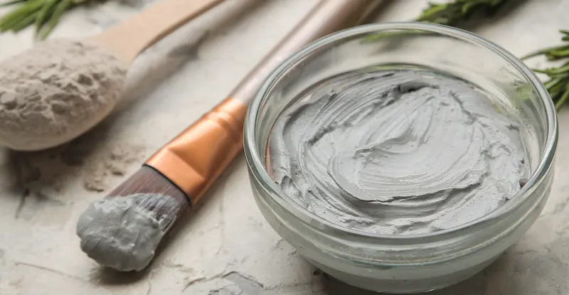
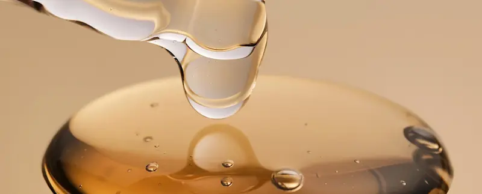

Натуральный минерал для очищения и баланса кожиЧто такое косметическая глина?
Косметическая глина — это натуральный минеральный ингредиент, получаемый из осадочных пород, богатых микро- и макроэлементами. В уходе за кожей глина используется благодаря своим очищающим, абсорбирующим и реминерализующим свойствам.
Она особенно ценится в уходе за жирной, комбинированной и проблемной кожей, но при правильном подборе подходит практически для любого типа.
Как действует глина на кожу?
Основные виды косметической глины
- Белая глина (каолин)
- мягко очищает, подходит для чувствительной и сухой кожи
- Зелёная глина
- интенсивно абсорбирует себум, рекомендована для жирной кожи
- Голубая глина
- улучшает тонус кожи, стимулирует обновление
- Розовая глина
- балансирует, подходит для тусклой и чувствительной кожи
Кому может не подойти?
Важно: глина — не средство ежедневного ухода. Частота применения имеет решающее значение.
Как правильно использовать глину?
Глиняные маски не должны полностью высыхать на коже — это ключевой момент для сохранения кожного барьера.

С чем лучше сочетать глину?
Что говорит наука?
Косметическая глина активно изучается в дерматологии благодаря своим абсорбирующим, противовоспалительным и реминерализующим свойствам.
*Информация основана на дерматологических публикациях и клинических наблюдениях в области косметологии.
Часто задаваемые вопросы о глине в косметике

Можно ли делать глиняные маски каждый день?
Нет. Чрезмерное использование может нарушить кожный барьер. Оптимально — 1–2 раза в неделю.
Подходит ли глина для сухой кожи?
Да, при выборе мягких видов (например, белой или розовой глины) и обязательном последующем увлажнении.
Почему нельзя ждать полного высыхания?
Высохшая глина начинает забирать влагу из кожи, вызывая чувство стянутости и сухости.
Как часто можно использовать маску с глиной?
1–2 раза в неделю, в зависимости от типа кожи и разновидности используемой глины.
Подходит ли глина для чувствительной кожи?
Да, особенно белая или розовая глина — при кратковременном нанесении и обязательном последующем увлажнении кожи.
Поделитесь своим опытом
Ваш отзыв поможет другим понять, подойдёт ли этот ингредиент именно им. Даже 1–2 предложения будут полезны
Не знаете, что написать? Выберите варианты — текст сформируется автоматически
Мы публикуем только реальные отзывы. Реклама и ссылки не проходят модерацию.
Отправляя комментарий, вы соглашаетесь с Политикой конфиденциальности.